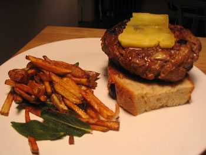

Hamburgers

What’s the best recipe and method for making delicious hamburgers at home, without a grill?
I made these last week, my first time making burgers. They came out well, but they lacked…something. They just tasted like ground beef cooked in a skillet. I grated a bunch of onion into the beef, and I added a spoonful of crème fraîche as well, since James Beard wrote how good cream is in a burger. And the sage fries were delicious. But should I sear my hamburgers and then finish them in oven? Should I broil them? What is the best kind of beef to use? 85/15, as for a meatloaf?
Any advice would be appreciated.
Comments
I know this sounds ridiculously foodie-ish, but my current favorite choice for hamburger meat is buffalo. It just makes a lovely sweet, clean-tasting burger.
Sounds great. How do you prepare it?
Did you use your cast iron skillet, and pre-heat it, so the burgers got really well-browned on the outside? Did you cook them so they were still pink on the inside? I’ve never tried buffalo, but if the ground beef is good, you should be able to taste it, and don’t want to disguise the flavor too much. But, in my opinion, burgers need lots of salt, and I like mine with a slice of tomato and one of raw, sweet onion.
85/15 is good when you’re grilling them, so they don’t get too dry, but if you’re doing them in the skillet you might want to go with 90/10, so they don’t sit in grease and splatter so much. Some people say you should put salt in the skillet first, but that seems to me like it would draw out the juices. I don’t know what others think about this.
Here’s what Robert Wolke has to say about this in What Einstein Told His Cook:
Salt-Seared Burgers
Hamburgers cooked on a gas or charcoal grill lose a lot of juice by dripping into the fire. But when they are cooked in a skillet, the evaporating juices leave behind flavorful “brown bits,” or fond on the pan. That would be wonderful if the pan were to be deglazed with wine or another liquid to make a sauce. But when skillet-cooking plain, unsauced hamburgers, all those brown bits are lost.
The solution: Cook the burgers on a thin layer of salt in the skillet. The salt draws out juices and quickly congeals them, forming a crust on the meat that keeps it from sticking to the pan and leaving its brown goodies behind. The resulting burger is crunchy on the outside, and deliciously salty.
Thanks for the explanation of the salt in the pan, Jimmy—that’s a great book, isn’t it? I must have forgotten that passage, though; there’s just so much information in there! Making the burgers that way sounds just as good as grilling them, if not better.
Oooh! This has been productive! I’ll try that next time around. Thanks to all.
Add a comment